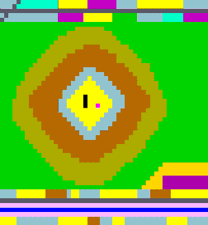
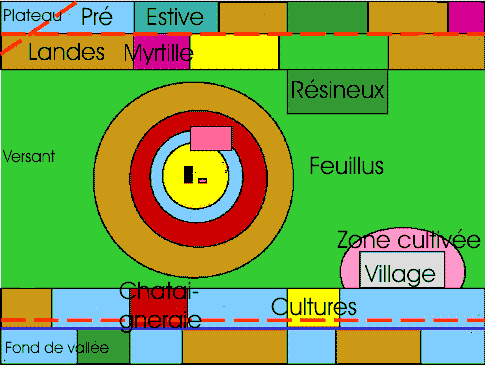
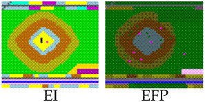

|
SpatioDyn
Modélisation des dynamiques spatiales par SIG et SMA
Muriel Bonin

Notre travail porte sur la modélisation des dynamiques
spatiales et est appliqué au Massif du Tanargue (Monts
d'Ardèche, France). Il se situe dans la continuité de
travaux antérieurs qui envisagent l'espace dans les SMA,
non pas comme une grille de cellules, mais comme un
ensemble d'entités spatiales en interaction (voir l'article de Bousquet et Gautier,
"Comparaison de deux approches de modelisation des
dynamiques spatiales par simulation multi-agents : les
approches 'spatiale' et 'acteurs' ").
Afin d'intégrer l'organisation de l'espace dans la
modélisation, nous utilisons un modèle graphique dont
les composants élémentaires sont les entités spatiales
du SMA et sont dotés de propriétés d'agents.
Déprise agricole et usages de l'espace
La problématique de recherche porte sur les
recompositions agricoles et les conflits ou
complémentarités avec les autres usages de l'espace
(tourisme, sylviculture, chasse, observation-protection
du milieu naturel, usage résidentiel). Par rapport à
cette question générale, la modélisation permet de
guider le géographe dans l'analyse des données et la
formalisation. La simulation implique un raisonnement
sur les fonctionnements et les dynamiques du système
spatial.
La question spécifique porte sur la mise en place d'un
schéma de gestion de l'espace afin d'enrayer les impacts
de la déprise agricole et de rendre compatibles
différents usages de l'espace. L'objectif de la
modélisation et de la simulation est de construire un
support de discussion avec les acteurs à propos du
fonctionnement, des évolutions souhaitées du système et
de l'impact spatial d'actions.
Du terrain au modèle graphique
Deux types de données de terrain sont utilisés.
Les données du " pôle froid " sont recueillies selon un
protocole d'observation des dynamiques d'occupation du
sol (série de couches d'occupation du sol,
1950-1969-1979-1991, construites à partir de
photographies aériennes à l'aide de SIG). Elles
fournissent des informations fiables et quantifiables.
Les données du " pôle chaud " sont des données plus
subjectives concernant les souhaits des acteurs locaux
sur le devenir de leur territoire. Elles ont été
recueillies dans le cadre de la mise en place du Schéma
d'Aménagement du Massif du Tanargue. Elles permettent de
sélectionner les actions dont on simulera l'impact
spatial et de caractériser les états souhaités du
territoire.
La formalisation s'est faite à l'aide d'un modèle
graphique (voir figure suivante).

Figure 1. Le modèle graphique et ses
entités élémentaires. Chacun des noms indiqués renvoie à
un composant élémentaire qui correspond à une entité
spatiale du SMA.
Chacun des composants du modèle graphique est
caractérisé par un état, par une dynamique et par les
actions envisagées et les états souhaités par les
acteurs. Chacun est implémenté dans Cormas en tant
qu'entité spatiale dotée d'attributs et méthodes
d'évolution.
Quelles simulations ?
Dans un premier temps, le passage entre deux cas
extrêmes est modélisé. L'état initial (EI) est l'état du
modèle au moment du " boom démographique ", où
l'utilisation de l'espace est maximale. L'état final
pessimiste (EFP) correspond à l'état obtenu sous
l'hypothèse d'un abandon total de l'espace (voir figure
suivante). Au cours du passage de EI vers EFP, les
dynamiques naturelles l'emportent sur l'impact des
actions humaines : par colonisation de la végétation
naturelle, les feuillus gagnent sur les landes et les
landes ouvertes deviennent des landes fermées.

Figure 2. Etat initial et état final
pessimiste.
Ensuite, nous définissons un ensemble de référentiels
qui représentent l'impact de processus élémentaires à
partir de l'état actuel (EA). EA est construit grâce aux
structures spatiales identifiées par
photo-interprétation sur la base d'une matrice
cadastrale avec la photographie la plus récente et le
diagnostic de territoire élaboré par les gestionnaires
de l'espace et les acteurs locaux. La liste des
processus identifiés par le thématicien, concernant les
dynamiques naturelles et les infléchissements liés aux
actions humaines, permet de définir ces référentiels
(voir figure suivante).
Figure 3. Les trois types de simulations
Par exemple, une multiplication de résidences
secondaires sans règlement d'urbanisme se traduit par un
mitage de l'espace : l'entité spatiale " résidence
secondaire " se multiplie et s'implante aléatoirement
sur les différentes entités spatiales du versant. Dans
un autre exemple, la fermeture du milieu est liée à la
baisse de la pression pastorale (l'instance "UnFeuillus"
du versant se dilate alors que l'instance de "UneLande"
se rétracte, "UneLande" passe de l'état lande ouverte à
lande fermée et change de couleur). Les impacts de la
mise en place d'actions concernent par exemple le frein
au développement des résineux par une réglementation de
boisement, le frein au mitage de l'espace par
délimitation des zones urbanisables dans un Plan
d'Occupation des Sols, la ré-ouverture du milieu grâce
au soutien à l'élevage, l'entretien des terrasses et des
anciens canaux d'irrigation suite à l'attribution de
primes, etc.
Ces référentiels sont implémentés dans le SMA. Ils sont
combinés afin d'aboutir à l'implémentation du passage de
EA à ES (état souhaité). ES est la traduction
informatique des objectifs fixés par les animateurs
suite aux réunions communales et thématiques auprès des
acteurs locaux. Les méthodes de passage de EA à ES sont
des combinaisons entre les dynamiques naturelles et les
actions engagées par les gestionnaires de l'espace (voir
figure 3).
L'objectif de la simulation est de répondre à la
question : quelles actions mettre en place pour passer
de EA à ES ?
Pour en savoir plus, contactez l'auteur.
|